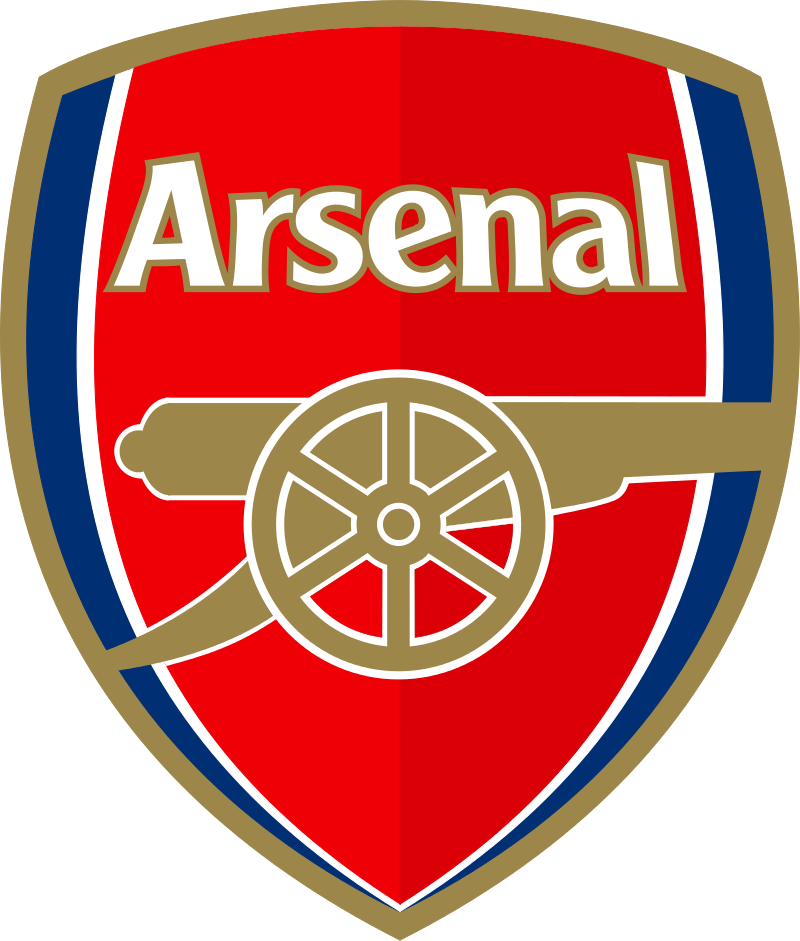

لدوري الإنجليزي الممتاز (بالإنجليزية: Premier League) هو دوري كرة القدم للقسم الأول في إنجلترا وقد تم استخدام مسمى الدوري الممتاز في سنة 1992م. يتكون الدوري من 20 فريق، برعاية بنك باركليز، ولذلك يسمى دوري باركليز الممتاز (بالإنجليزية: The Barclays Premier League). ينطلق الدوري في شهر أغسطس وينتهي في شهر مايو، ويلعب كل فريق 38 مباراة، ليصبح المجموع 380 مباراة في الموسم الواحد، تلعب معظم المباريات يومي السبت والأحد، ولكن عدد قليل من المباريات تلعب خلال أمسيات منتصف الأسبوع. حتى عام 1992، أعلى درجة في كرة القدم الإنجليزية كانت الدرجة الأولى؛ ومنذ ذلك الحين، أصبح الدوري الإنجليزي الممتاز هو الأعلى. فتم تشكيل مسابقة الدوري الإنجليزي الممتاز في 20 فبراير 1992، بعد قرار أندية الدرجة الأولى الانفصال عن دوري الدرجة الأولى، الذي تأسس عام 1888 ; وذلك للاستفادة من صفقات مربحة من حقوق البث التلفزيوني. ومن ذلك الحين أصبح الدوري الإنجليزي الممتاز أكثر دوري مشاهدةً في العالم، وهو كذلك أكثر دوري كرة قدم ربحاً ; وذلك بإيرادات الأندية مجتمعة بلغت 1.93 مليار دولار في موسم 2007-2008، وهو كذلك صاحب المركز الأول في ترتيب الاتحاد الأوروبي لكرة القدم للدوريات من حيث الأداء في البطولات الأوروبية خلال الخمس سنوات الماضية، متفوقاً على الدوري الإسباني والدوري الإيطالي. منذ بدأ النظام الحالي للبطولة في عام 1992، ومن مجموع 44 نادياً نافست على الدوري الإنجليزي الممتاز، ستة أندية فقط فازوا باللقب : أرسنال (3 ألقاب)، بلاكبيرن روفرز (لقب واحد)، تشيلسي (5 ألقاب)، مانشستر سيتي (5 ألقاب)، مانشستر يونايتد (13 لقب)، ليستر سيتي (لقب واحد). حامل اللقب في الدوري الحالي هو مانشستر سيتي.
كأس الدوري الانجليزي
ملعب الأنفيلد حيث يلعب نادي ليفربول مبارياته في الدوري
سنوات البطولة |
عدد الألقاب |
النادي |
| 1907–08، 1910–11، 1951–52، 1955–56، 1956–57، 1964–65، 1966–67، 1992–93، 1993–94، 1995–96، 1996–97، 1998–99، 1999–2000، 2000–01، 2002–03، 2006–07، 2007–08، 2008–09، 2010–11، 2012–13 | 20 لقباً |
 مانشستر يونايتد |
| 1900–01، 1905–06، 1921–22، 1922–23، 1946–47، 1963–64، 1965–66، 1972–73، 1975–76، 1976–77، 1978–79، 1979–80، 1981–82، 1982–83، 1983–84، 1985–86، 1987–88، 1989–90، 2019–20 | 19 لقباً |
ليفربول |
| 0–31، 1932–33، 1933–34، 1934–35، 1937–38، 1947–48، 1952–53، 1970–71، 1988–89، 1990–91، 1997–98، 2001–02، 2003–04 | 13لقباً |
 ارسنال |
| 1890–91، 1914–15، 1927–28، 1931–32، 1938–39، 1962–63، 1969–70، 1984–85، 1986–87 | 9 القاب |
ايفرتون |
| 1893–94، 1895–96، 1896–97، 1898–99، 1899–1900، 1909–10، 1980–81 | 7 القاب |
أستون فيلا |
| 1936–37، 1967–68، 2011–12، 2013–14، 2017–18، 2018–19، 2020–21 | 7 القاب |
مانشستر سيتي |
| 1891–92، 1892–93، 1894–95، 1901–02، 1912–13، 1935–36 | 6 القاب |
سندرلاند |
| 1954–55، 2004–05، 2005–06، 2009–10، 2014–15، 2016–17 | 6 القاب |
تشيلسي |
| 1904–05، 1906–07، 1908–09، 1926–27 | 4 القاب |
نيوكاسل يونايتد |

بالأنجليزية: Harry Edward Kane؛ (مواليد 28 يوليو 1993) هو لاعب كرة قدم إنجليزي يلعب مهاجمًا لنادي توتنهام هوتسبير في الدوري الإنجليزي الممتاز والمنتخب الإنجليزي. يُعتبر كين أحد أفضل المهاجمين في العالم، وهو معروف بسجله التهديفي الغزير وقدرته على ربط اللعب. ولد كين ونشأ في حي والثام فورست بلندن، وبدأ مسيرته المهنية في توتنهام هوتسبير، حيث تمت ترقيته إلى الفريق الأول في عام 2009، في سن 16 عامًا، بعد تقدم سريع من خلال أكاديمية شباب الفريق، وأُعير عدة مرات إلى أندية عبر هرم كرة القدم الإنجليزية، بما في ذلك ليتون أورينت، وميلوول، وليستر سيتي، ونورويتش سيتي. بدأت مشاركة كين في توتنهام تتزايد بعد وصول ماوريسيو بوتشيتينو كمدرب رئيسي في عام 2014. في أول موسم كامل له مع النادي، سجل كين 31 هدفًا في جميع المسابقات، وكان ثاني أفضل هداف في الدوري الإنجليزي الممتاز، وتم اختياره لجائزة أفضل لاعب شاب في إنجلترا. في مواسم 2015–16، و2016–17 و2020–21، أنهى كين الموسم وهو متصدر قائمة هدافي الدوري. في موسم 2016–17، ساعد توتنهام في إنهاء الموسم كوصيف للدوري وفاز بجائزة لاعب العام من مشجعي اتحاد لاعبي كرة القدم المحترفين . سجل كين أعلى حصيلة من الأهداف حتى الآن في موسم 2017–18، حيث سجل 41 هدفًا في 48 مباراة عبر جميع المسابقات، وفي الموسم التالي، أنهى دوري أبطال أوروبا كوصيف. في فبراير 2021، أصبح ثاني أفضل هداف في تاريخ توتنهام في المسابقات الرسمية. سجل كين 37 هدفا في 59 مباراة مع إنجلترا. شارك وسجل أهدافًا في كل مستوى من مستويات الشباب. سجل هدف في أول مشاركة دولية له في 27 مارس 2015، وبعمر 21 عامًا، حيث شارك كين وسجل هدفاً خلال تصفيات إنجلترا الناجحة لبطولة أمم أوروبا 2016، ومثّل منتخب بلاده في البطولة نفسها. أصبح قائد المنتخب من مايو 2018، قبل كأس العالم 2018. في تلك البطولة، قاد كين إنجلترا إلى المركز الرابع، وهو أعلى إنجاز لها منذ عام 1990. كما أنهى كأس العالم كهداف، وفاز بالحذاء الذهبي. في مقابلة أجريت في فبراير 2015، قال كين إنه كان على علاقة مع كاتي جودلاند، التي يعرفها منذ الطفولة. في 1 يوليو 2017، أعلن كين خطوبته على جودلاند على حسابه في تويتر، وأعلن في يونيو 2019 أنهما تزوجا.